e-Orbit
Borrador inicial para revision visual
Este borrador usa exclusivamente assets review-draft del reset visual 2026-05-13 para revisar la cobertura del manual completo antes de aprobar publicacion definitiva.
1. Introduccion
Este manual resume el uso esencial de e-Orbit en un formato editorial listo para maquetacion web.
2. Capacidades clave
- Conectividad: Wi-Fi 2.4 GHz para vinculacion y control desde la app.
- Modos de apertura: reconocimiento facial, huella dactilar, contrasena y tarjeta.
- Gestion remota: desbloqueo remoto, contrasenas temporales y registro de eventos.
- Seguridad: alarma anti manipulacion y auto-lock configurable.
- Energia: alimentacion de emergencia por Micro USB 5V/1A.
3. Vista general y primeros pasos
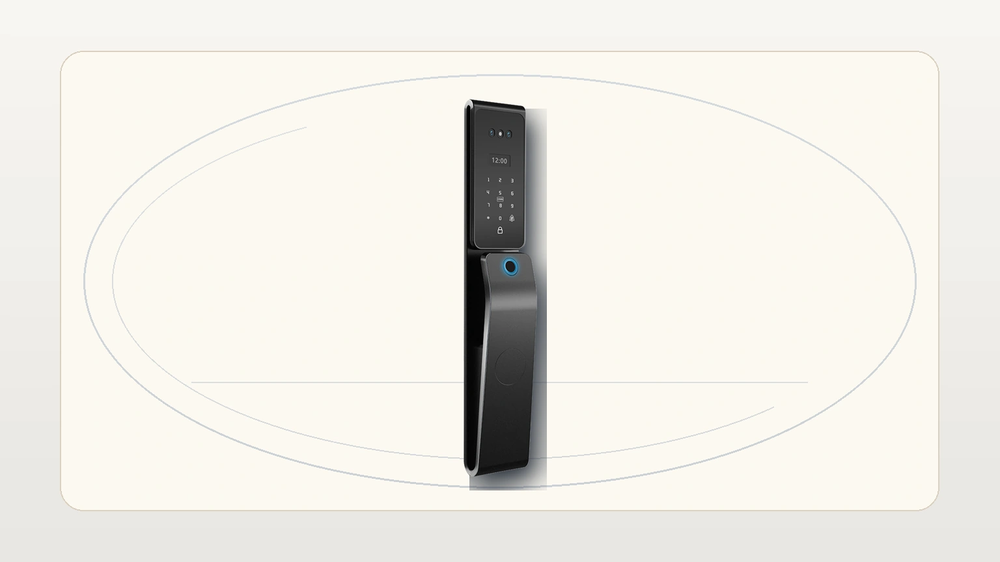
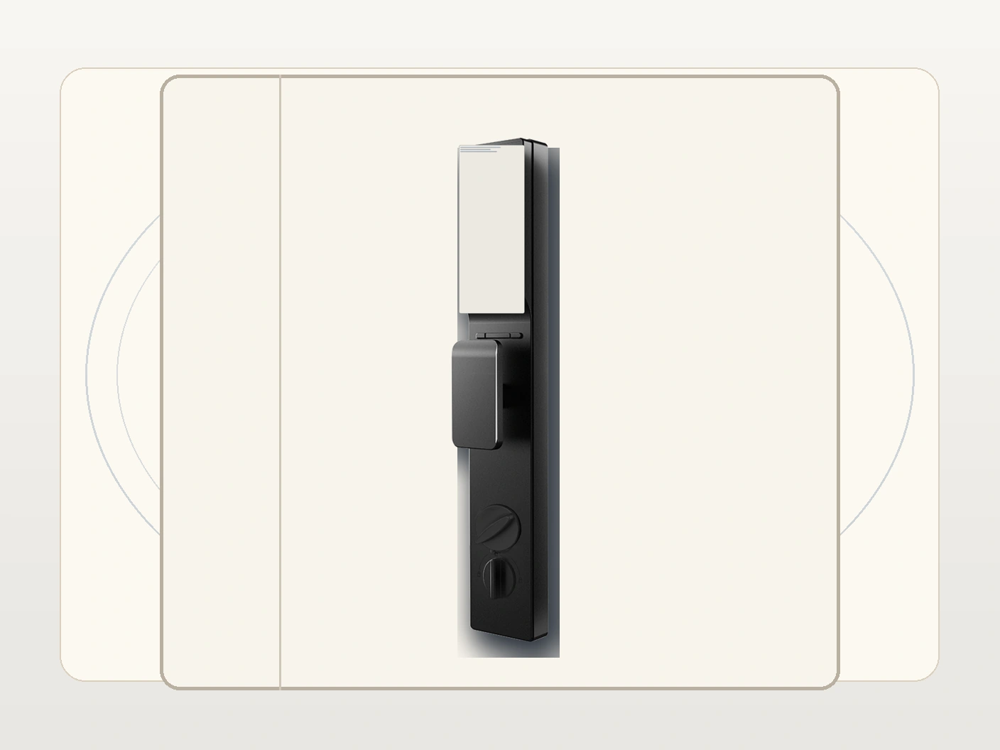
Esta vista complementa la lectura exterior mostrando la relacion entre la pantalla interior y el control de cierre del lado interno.
Antes de iniciar:
- verifica que la cerradura este instalada y alineada
- comprueba que el panel responde al activarlo
- define el administrador principal
- prueba un metodo de respaldo antes de pasar a la app
4. Agregar un administrador
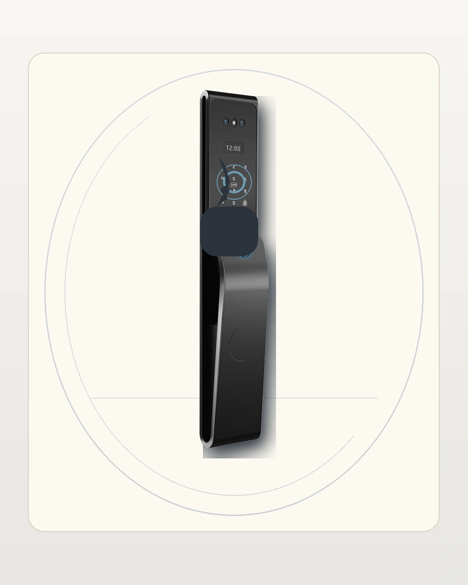
Secuencia recomendada:
- activa el panel
- entra al menu de usuarios
- selecciona agregar administrador
- registra el metodo de acceso principal
- valida el acceso de inmediato
5. Registrar una contrasena o PIN
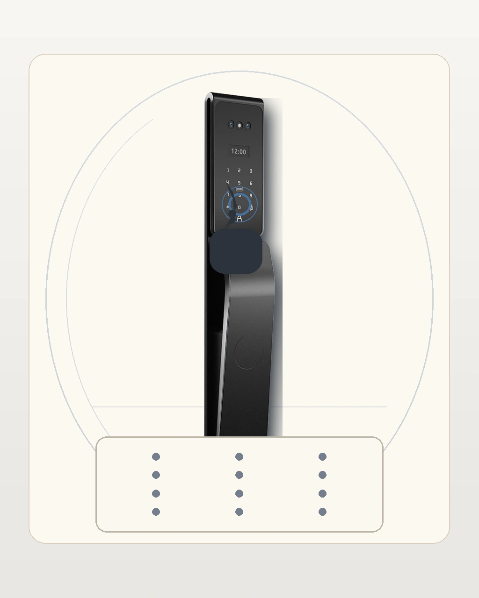
Al integrarlo en web:
- muestra el PIN como metodo de acceso controlado
- evita publicar una secuencia fija como si fuera la clave oficial
- recuerda validar la clave despues del registro
6. Registrar huella y otros accesos
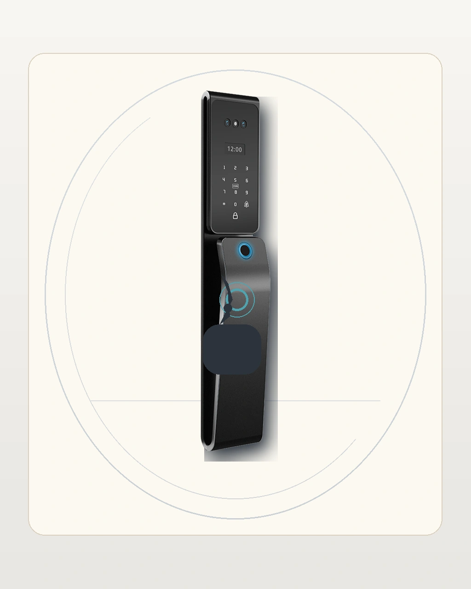
Usa esta seccion para explicar huella, tarjeta o reconocimiento adicional sin forzar texto tecnico dentro de la imagen. El contenido editorial debe describir el paso y la validacion posterior.
7. Ajustes e idioma
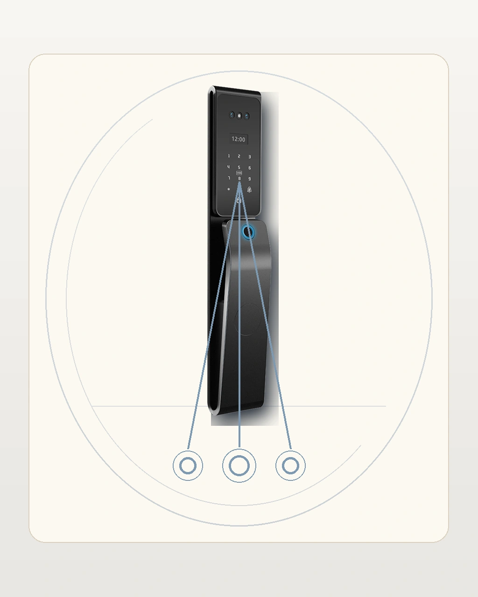
Este bloque cubre idioma y configuraciones basicas del sistema. Si tu implementacion usa codigos o rutas especificas, colocalos en el texto del manual y no como prueba visual incrustada.
8. App, QR y gestion remota
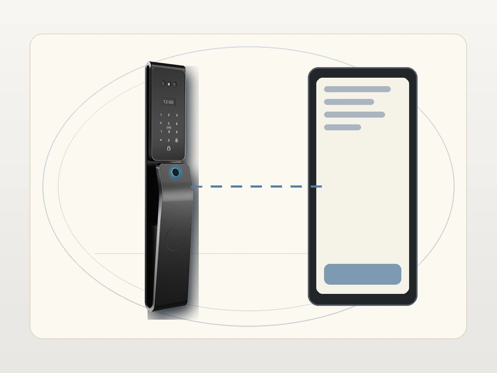
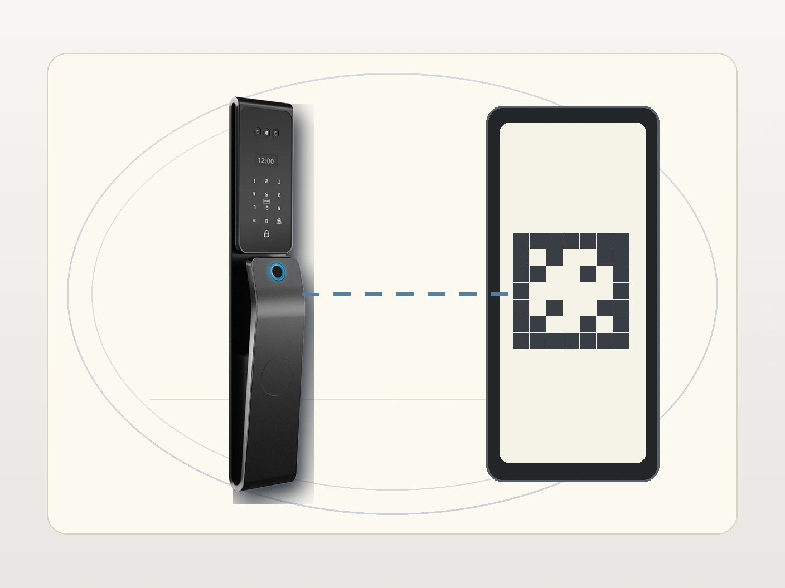
Para la pagina web, presenta el flujo de app asi:
- alta del dispositivo en Smart Life o la variante Tuya de la implementacion
- vinculacion segun la categoria correcta del equipo
- uso de QR solo cuando el flujo real de la app lo muestre
- validacion de eventos, control remoto y acceso temporal si la version instalada lo soporta
9. Solucion de problemas
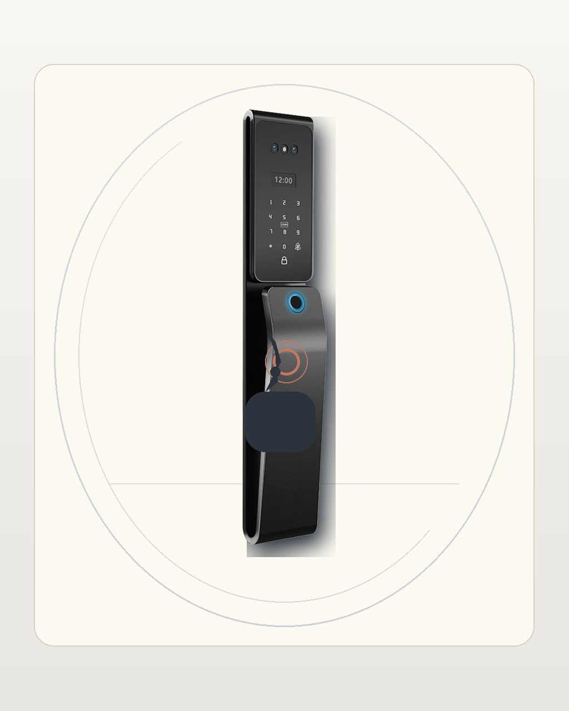
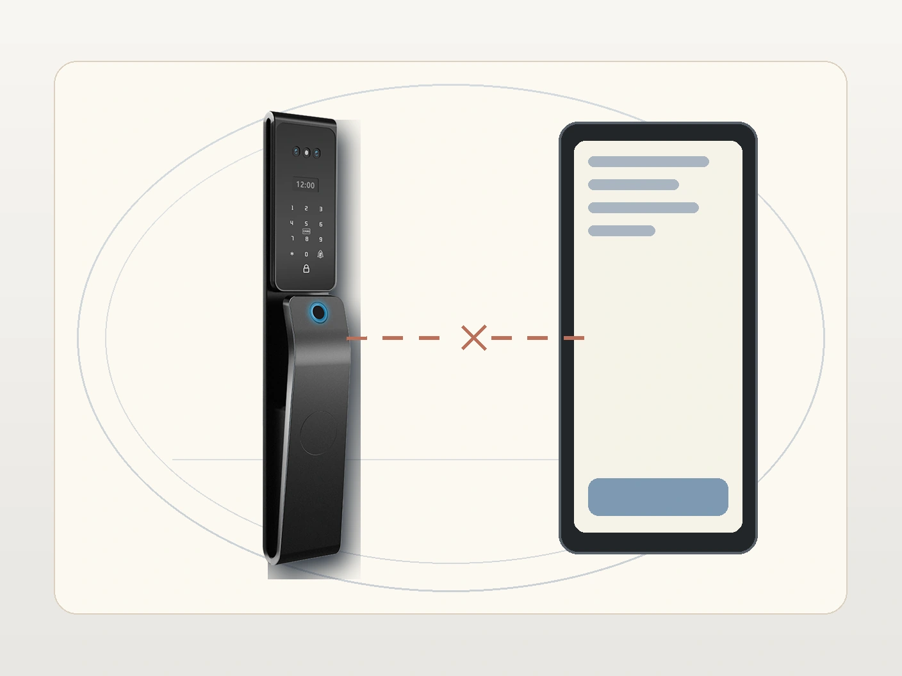
Usa este bloque para revisar si la narrativa visual diferencia bien entre problema biometrico y problema de vinculacion remota.
10. Descargas y documentacion
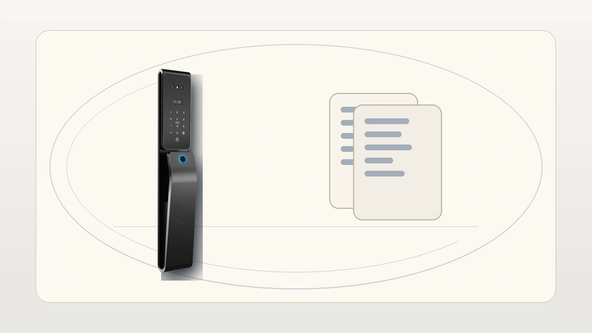
Este recurso puede apoyar una futura seccion de descargas, ficha tecnica y soporte comercial.
11. Estado del borrador
Este archivo es una version integral de revision. Los assets review-draft fueron reconstruidos bajo el reset visual 2026-05-13 y quedan listos para inspeccion antes de publicar el paquete final.